Data publicării: 01.02.2019
Autor articol: Adrian Iftene
Introducere
În zilele noastre, sistemele de supraveghere contribuie în mod vital la securitatea publică. Dezvoltarea pronunțată a domeniului inteligenței artificiale, în special inteligența artificială pentru procesarea de imagini (Baidyk et al., 2016) (vezi Figura 1 de mai jos oferită de cei de la G2Crowd), a facilitat analizarea videoclipurilor și a imaginilor preluate de camerele de supraveghere (Kardas și Cicekli, 2017) și (Zhang et al., 2017).
O primă problemă care apare în mai multe studii recente a fost problema detectării evenimentelor în supravegherea video (Cosar et al., 2017), care necesită abilitatea de a identifica și localiza modelele spațio-temporale specifice. În lucrarea (Guo et al., 2008) este tratată această problemă și sunt propuse soluții pe baza monitorizării unei persoane și a acțiunilor întreprinse de aceasta (vezi Figura 2).
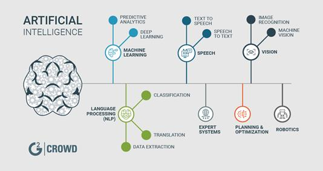
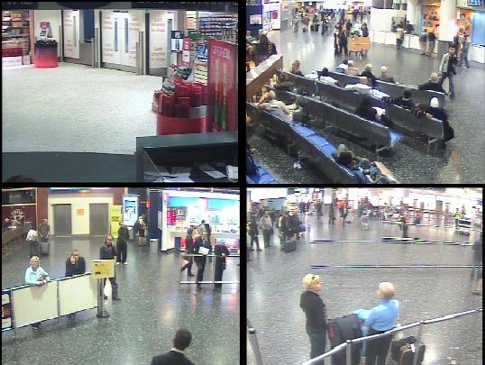
O altă problemă actuală din analiza imaginilor video, care stârnește un mare interes în cercetare, este problema de re-identificare a unei persoanei (Ahmed et al., 2015). Re-identificarea unei persoane este o problemă practică prin care se dorește identificarea aceleiași persoane în mai multe imagini, care au fost realizate fie cu mai multe camere, fie cu o singură cameră (vezi Figura 3). Re-identificarea este o funcție vitală pentru sistemele de supraveghere, precum și pentru sistemele de interacțiune om-calculator, pentru a facilita căutarea identității unei persoane în cantități mari de videoclipuri și imagini (vezi Figura 4).
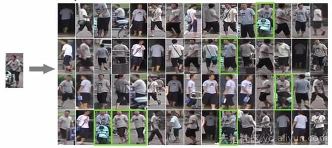
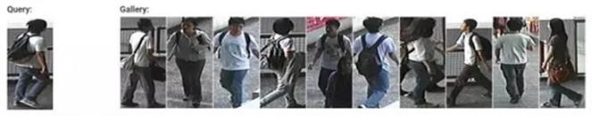
În mai multe situații, identificarea rasei unei persoane poate fi utilă pentru sistemele de supraveghere. Identificarea rasei unei persoane se face în primul rând pe baza procesării feței (Fu et al., 2014) (vezi Figura 5), dar se folosesc și alte caracteristici pentru a îmbunătăți calitatea unui astfel de sistem: caracteristici ce țin de aspect, regiuni discriminatorii locale, combinarea informațiilor 2D și 3D, caracterisitic ce țin de mers, vorbit sau gestică, etc. (vezi Figura 6).
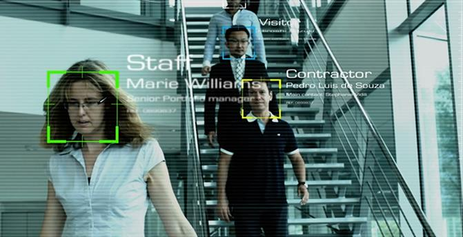
În ultimii ani, mulți cercetători au trecut de la recunoașterea rasei pentru grupurile de rasă populare, cum ar fi afro-americani, caucazieni și asiatici, la grupurile sub-etnice cum ar fi coreenii, japonezii, chinezii și vietnamezii (Bastanfard et al., 2007), (Gao et al., 2008), (Roh și Lee, 2007) și (Vo et al., 2018).
În ultimii ani, rețelele sociale au devenit populare cu miliarde de utilizatori din întreaga lume, cu milioane de informații partajate zilnic. Aceste rețele sociale folosesc algoritmi de procesare a imaginilor, care permit identificarea persoanelor, care se află în bazele lor de date (vezi Figura 7 de mai jos). În 2016, în lucrarea (Farnadi et al., 2016) autorii au oferit o analiză detaliată a diferitelor metode de ultimă oră pentru recunoașterea personalității în numeroase seturi de date de pe Facebook, Twitter și YouTube.
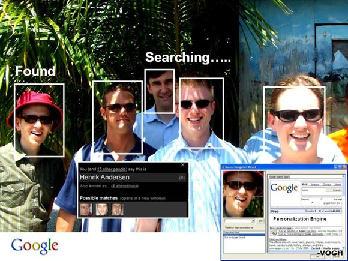
Detectarea emoțiilor în imagini este o altă direcție actuală de cercetare unde se dorește îmbunătățirea calității interacțiunii dintre un utilizator și o aplicație (Bardhan et al., 2018). Se consideră că emoțiile sunt efectul prezenței unui stimul în subiectul monitorizat și se dorește adaptarea interacțiunii în funcție de aceste observații (Figura 8 prezintă tipurile de emoții recunoscute prin procesarea de imagini).
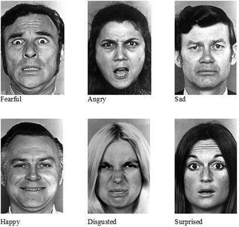
Rețele neuronale în Computer Vision
În ultimii ani, rețelele neuronale profunde au fost utilizate din ce în ce mai des în Computer vision, în special datorită performanțelor lor promițătoare. Pentru problema clasificării imaginilor, în (Zhang et al., 2016) autorii au propus o metodă nouă de învățare a caracteristicilor pentru clasificarea imaginilor, cu performanțe foarte bune. În (Wei et al., 2016), autorii au propus un model bazat pe o rețea neuronală flexibilă, pentru clasificarea imaginilor folosind mai multe etichete. În Figura 9 putem vedea cum putem decide cu o rețea neuronală adâncă dacă într-o imagine avem o pisică sau un cățel.
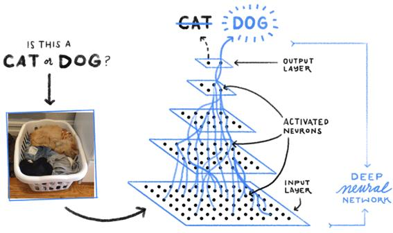
În aplicațiile legate de identificarea feței există mai multe tipuri de abordări, cum ar fi detectarea feței (Li et al., 2015), alinierea feței (Parka et al., 2017), analiza expresiei feței (Chen et al, 2017), etc. În 2015, în (Li et al., 2015) autorii au propus un model în cascadă construit pe o rețea neuronală cu o capacitate discriminantă foarte puternică, menținând în același timp performanțe ridicate pentru a rezolva problemele datorate poziției, expresiei și iluminării, în detectarea feței în lumea reală. Analiza expresiei feței ar putea fi aplicată în multe alte probleme cum ar fi evaluarea medicală, detectarea minciunilor, interfața om-calculator, robotică, etc. În articolul (Dao, 2018) se arată care sunt avantajele și dezavantajele folosirii tehnologiilor de identificare a feței (vezi Figura 10 de mai jos).
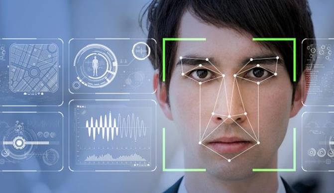
În analiza video, problema re-identificării persoanei este una importantă. În 2015, în (Ahmed et al., 2015) autorii au propus o metodă de învățare în paralel și o metrică de similitudine corespunzătoare pentru re-identificarea persoanei. Autorii prezintă, de asemenea, un model convoluțional profund cu straturi special conceput pentru a aborda problema re-identificării. Un astfel de sistem folosește date de antrenament care sunt procesate cu ajutorul rețelelor construite, construindu-se un model pe baza lor. Mai apoi cu ajutorul acestui model se face clasificarea datelor de test (vezi Figura 11).
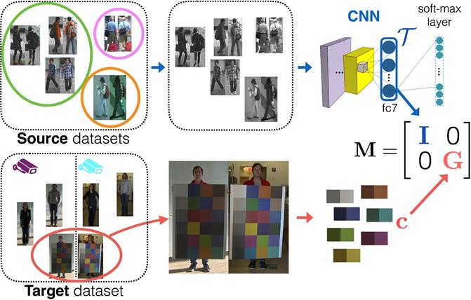
O altă problemă în analiza video este urmărirea unei ținte vizuale, care are o gamă largă de aplicații, cum ar fi în navigația vehiculelor, în realitatea augmentată, în supravegherea video, etc. În Figura 12 este un exemplu din aplicația celor de la Stanford, Online Multi-Object Tracking (MOT).
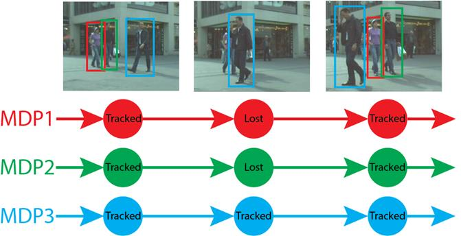
Recunoașterea activității umane este o altă problemă în analiza video, care a atras atenție în ultimii ani. În (Ronao și Cho, 2016), autorii au propus o rețea eficientă pentru recunoașterea activității umane folosind senzorii de la telefoanele inteligente. Abordarea lui D’Almeida care folosește deep learning pentru a recunoaște activitățile umane este prezentată pe scurt în arhitectura din Figura 13 de mai jos (D’Almeida, 2018).
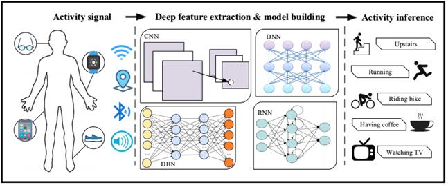
Transferul învățării
VGG este un model de rețea neuronală convoluțională propus în (Simonyan și Zisserman, 2015), care atinge 92,7% precizie în ImageNet (Deng et al., 2009), un set de date de peste 14 milioane de imagini aparținând a 1000 de clase. Modelul VGG instruit are două forme diferite – VGG-16 și VGG-19 – structura și parametrii acestora fiind disponibili gratuit online (în Figura 14 avem macro-arhitectura lui VGG-16). În (Hoo-Chang et al., 2016), autorii au studiat aplicarea modelelor VGG precomprimate la problemele de detectare asistate de calculator și au obținut rezultate promițătoare.
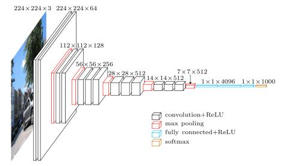
VGG-16 constă din 13 straturi convoluționale și trei straturi complet conectate. În acest model, filtre mai mari (de exemplu, 5 X 5) sunt construite din mai multe filtre mai mici (de exemplu, 3 X 3) (vezi Figura 15). Prin urmare, toate straturile convoluționale au aceeași dimensiune filtru de 3 X 3. În total, VGG-16 necesită 138 M de ponderi. Modelul VGG a fost utilizat în multe studii până acum (He et al., 2016), (Li et al., 2016), (Yang et al., 2016).
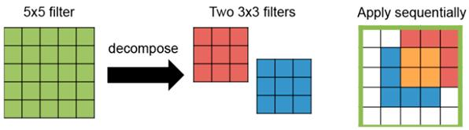
În lucrarea (Vo et al., 2018), autorii și-au propus să identifice fețe vietnameze. Pentru a efectua experimentul, ei au colectat informații despre utilizatori de diferite vârste și rase de pe Facebook, inclusiv imagini. Aceste conturi de pe Facebook au o varietate de imagini, cu posturi, accesorii, iluminări și condiții de preluare a acestora diferite. Figura 16 prezintă eșantioane de fețe vietnameze (în stânga) și altele (în dreapta).
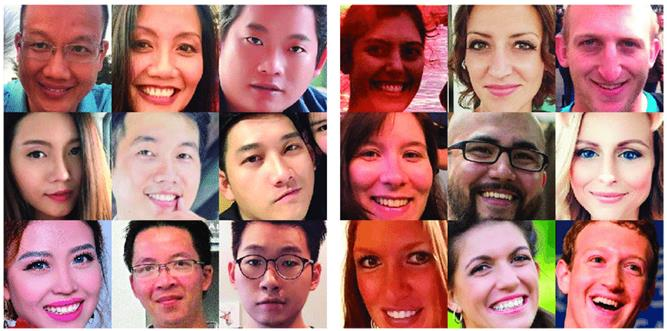
Rezultatele experimentale din acest studiu au arătat că cea mai bună precizie a fost de 88,87%. În alte cazuri examinate, modelele propuse au obținut, de asemenea, o mare precizie în clasificarea altor seturi de date cu alte rase, precum japoneză, chineză și braziliană.
Concluzii
Rețelele neuronale au fost folosite cu succes în clasificarea imaginilor și a cerințelor specifice din această arie a inteligenței artificiale: identificarea feței, identificarea și re-identificarea unei persoane, identificarea sentimentelor, detectarea evenimentelor, identificarea rasei, urmărirea unei ținte vizuale, recunoașterea activității umane, etc.
Pe lângă utilitatea principală a acestor sisteme și tehnici în cadrul sistemelor de supraveghere, au început să fie folosite în cadrul aplicațiilor de diagnoză medicală (pentru a identifica afecțiuni ale pacienților), în cadrul aplicațiilor ce presupun interacțiunea cu un utilizator (pentru a evalua gradul de mulțumire al celui ce folosește o anumită aplicație) sau în cadrul aplicațiilor ce permit căutarea de persoane (în colecții mari de video-clipuri sau de imagini).
Referințe bibliografice
- Ahmed, E., Jones, M. J., Marks, T. K. (2015) An improved deep learning architecture for person re-identification. In Proceedings of the 2015 IEEE Conference on Computer Vision and Pattern Recognition (CVPR), Boston, MA, USA, 7–12 June 2015, pp. 3908–3916.
- Baidyk, T., Kussul, E. M., Monterrosas, Z. C., Gallardo, A. J. I., Serrato, K. L. R., Conde, C., Serrano, A., Diego, I. M., Cabello, E. (2016) Face recognition using a permutation coding neural classifier. Neural Comput. Appl. 27, pp. 973–987.
- Bardhan, Y., Fulzele, T. A., Ranjan, P., Upadhyay, S., Bharate, V. D. (2018) Emotion Recognition using Image Processing. Published in International Journal of Trend in Scientific Research and Development (ijtsrd), ISSN: 2456-6470, Volume-2, Issue-3 , April 2018.
- Bastanfard, A., Nik, M. A., Dehshibi, M. M. (2007) Iranian face database with age, pose and expression. In Proceedings of the 2007 International Conference on Machine Vision, Islamabad, Pakistan, 28–29 December 2007, pp. 50–58.
- Chen, J., Ou, Q., Chi, Z., Fu, H. (2017) Smile detection in the wild with deep convolutional neural networks. Mach. Vis. Appl. 28, pp. 173-183.
- Cosar, S., Donatiello, G., Bogorny, V., Gárate, C., Alvares, L. O., Brémond, F. (2017) Toward abnormal trajectory and event detection in video surveillance. IEEE Trans. Circuits Syst. Video Technol, 27, pp. 683-695.
- D’Almeida, W. (2018) Deep learning for sensor-based human activity recognition. Becoming Human. Exploring Artificial Intelligence & What it Means to be Human. http://becominghuman.ai/deep-learning-for-sensor-based-human-activity-recognition-970ff47c6b6b
- Dao, D. Q. (2018) 5 Pros and Cons of Face Recognition Technology. TechFunnel. Information Technology. http://www.techfunnel.com/information-technology/5-pros-and-cons-of- face -recognition-technology/
- Deng, J., Dong, W., Socher, R., Li, L.-J., Li, K., Fei-Fei, L. (2009) Imagenet: A large-scale hierarchical image database. In Proceedings of the 2009 IEEE Conference on Computer Vision and Pattern Recognition, Miami, FL, USA, 20-25 June 2009, pp. 248-255.
- Farnadi, G., Sitaraman, G., Sushmita, S., Celli, F., Kosinski, M., Stillwell, D., Davalos, S., Moens, M. F., Cock, M. D. (2016) Computational personality recognition in social media. User Model. User-Adapt. Interact. 26, pp. 109-142.
- Fu, S., He, H., Hou, Z. G. (2014) Learning Race from face: A survey. IEEE Trans. Pattern Anal. Mach. Intell. 36, pp. 2483-2509.
- Gao,W., Cao, B., Shan, S. G., Chen, X. L., Zhou, D. L., Zhang, X. H., Zhao, D. B. (2008) The CAS-PEAL large-scale Chinese face database and baseline evaluations. IEEE Trans. Syst. Man Cybern. Part A Syst. Hum. 38, pp. 149–161.
- Guo, J., Liu, A., Song, Y., Chen, Z., Pang, L., Xie, H., Zhang, L. (2008) TRECVID 2008 Event Detection By MCG-ICT-CAS. In Proc. TRECVID Workshop 08.
- He, K., Wang, Y., Hopcroft, J. E. (2016) A powerful generative model using random weights for the deep image representation. In Proceedings of the 30th Conference on Neural Information Processing Systems (NIPS), Barcelona, Spain, 5-11 December 2016, pp. 631-639.
- Hoo-Chang, S., Roth, H. R., Gao, M., Lu, L., Xu, Z., Nogues, I., Yao, J., Mollura, D., Summers, R. M. (2016) Deep convolutional neural networks for computer-aided detection: CNN architectures, dataset characteristics and transfer learning. IEEE Trans. Med. Imaging 2016, 35, pp. 285-1298.
- Kardas, K., Cicekli, N. K. (2017) SVAS: Surveillance Video Analysis System. Expert Syst. Appl. 89, pp. 343-361.
- Li, H., Lin, Z., Shen, X., Brandt, J., Hua, G. (2015) A convolutional neural network cascade for face detection. In Proceedings of the 2015 IEEE Conference on Computer Vision and Pattern Recognition (CVPR), Boston, MA, USA, 7-12 June 2015; pp. 5325-5334.
- Li, X., Zhao, L., Wei, L., Yang, M. H., Wu, F., Zhuang, Y., Ling, H., Wang, J. (2016) DeepSaliency: Multi-task deep neural network model for salient object detection. IEEE Trans. Image Process. 25, pp. 3919-3930.
- Parka, B. H., Oha, S. Y., Kim, I. J. (2017) Face alignment using a deep neural network with local feature learning and recurrent regression. Expert Syst. Appl. 89, pp. 66-80.
- Roh, R. C., Lee, S. W. (2007) Performance evaluation of face recognition algorithms on Korean face database. Int. J. Pattern Recognit. Artif. Intell. 21, pp. 1017-1033.
- Ronao, C. A., Cho, S. B. (2016) Human activity recognition with smartphone sensors using deep learning neural networks. Expert Syst. Appl. 59, pp. 235-244.
- Simonyan, K., Zisserman, A. (2015) Very deep convolutional networks for large-scale image recognition. arXiv 2015, arXiv:1409.1556. Available online: http://arxiv.org/abs/1409.1556
- Vo, T., Nguyen, T., Le, C. T. (2018) Race Recognition Using Deep Convolutional Neural Networks. Symmetry 10(11): 564.
- Wei, Y., Xia, W., Lin, M., Huang, J., Ni, B., Dong, J., Zhao, Y., Yan, S. (2016) HCP: A flexible CNN framework for multi-label image classification. IEEE Trans. Pattern Anal. Mach. Intell. 38, pp. 1901–1907.
- Yang, W., Ouyang, W., Li, H., Wang, X. (2016) End-to-end learning of deformable mixture of parts and deep convolutional neural networks for human pose estimation. In Proceedings of the 2016 IEEE Conference on Computer Vision and Pattern Recognition (CVPR), Las Vegas, NV, USA, 27-30 June 2016, pp. 3073-3082.
- Zhang, Q., Chen, X., Zhan, Q., Yang, T., Xia, S. (2017) Respiration-based emotion recognition with deep learning. Comput. Ind. 92-93, pp. 84-90.
- Zhang, Y., Zhang, E., Chen, W. (2016) Deep neural network for halftone image classification based on sparse auto-encoder. Eng. Appl. Artif. Intell. 50, pp. 245–255.